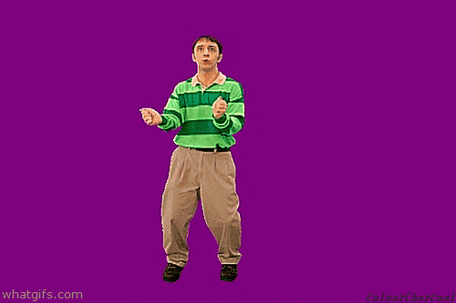

check out this blue canvas:
Click on ya boi steve:
click play on audio player
click play on video player:
check out this embedded gif of steve
The thinking chair is a famous prop used on set of the children's show Blues Clues. It has been known to mysteriously bestow advanced problem solving abilities upon its users.